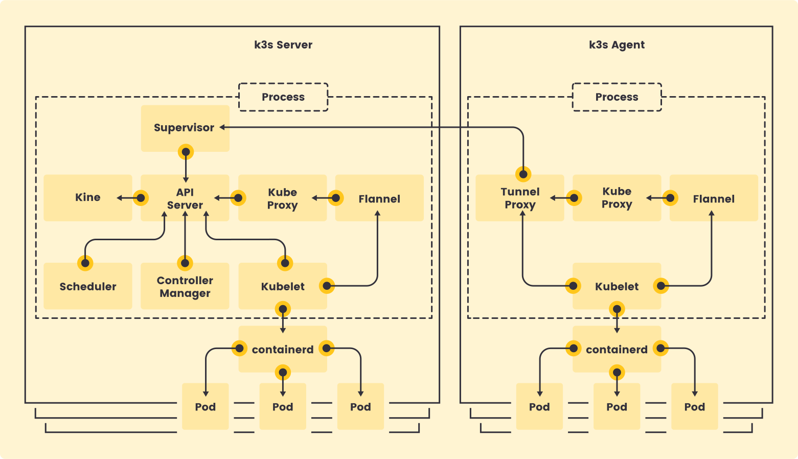
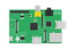
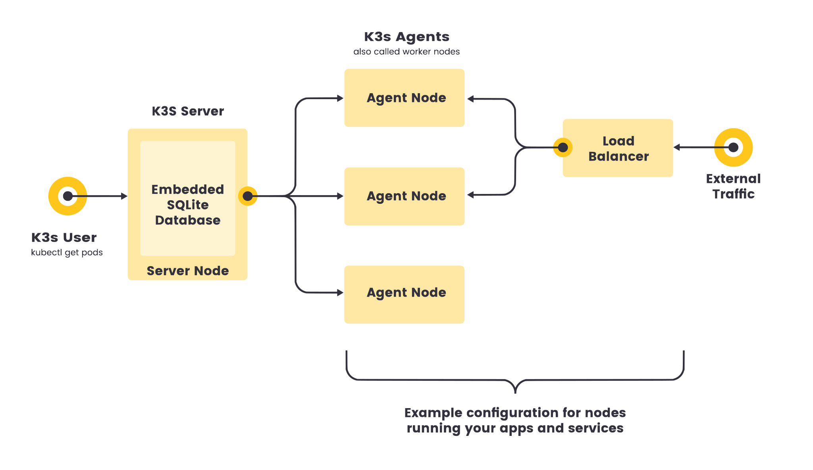

Taming the Edge with Kubernetes

Intro
Kubernetes has become the go-to solution for container orchestration in today’s IT landscape. Gartner’s “The CTO’s Guide to Containers and Kubernetes” confirms this, highlighting the widespread adoption and increasing importance of Kubernetes by 2027. However, deploying traditional Kubernetes at the network’s edge or for resource-constrained Internet of Things (IoT) devices can be challenging due to their resource requirements.
This is where K3s comes in. K3s is a lightweight Kubernetes distribution specifically designed for edge and IoT deployments, originally developed by RANCHER and is a Cloud Native Computing Foundation (CNCF) Sandbox Project. Packed with features that make it perfect for resource-constrained environments, K3s allows you to bring the power and flexibility of Kubernetes to the farthest reaches of your network.
Why Kubernetes at the Edge and IoT?
There are several compelling reasons to deploy containerized applications at the edge and for IoT devices. Firstly, containerization enables faster response time for real-time processing. By processing data closer to its source, you reduce latency and improve overall application performance. Secondly, containerization can enhance data security by keeping data local to edge devices. This reduces the risk of data breaches associated with centralized cloud storage. Finally, containerization helps you reduce reliance on centralized cloud resources, leading to potentially lower costs and improved operational efficiency.
But how can Kubernetes, known for its complexity, be effectively utilized at the edge? This is where K3s shines.
Enter K3s: A Lightweight Kubernetes for the Edge
K3s is a stripped-down version of Kubernetes designed for resource-constrained environments. Here are some key features that make K3s the perfect choice for edge and IoT deployments:
Reduced complexity through a smaller footprint: K3s is packaged as a single <70MB binary and eliminates the need for complex external dependencies like etcd (distributed key-value store) by using a lightweight SQLite database for cluster state management. This simplifies deployment and ongoing maintenance.
All k8s control plane components are consolidated into a single binary and run as unified process. https://docs.K3s.io/architecture
Minimal resource requirements: K3s has a small footprint, requiring less CPU, memory, and storage compared to traditional Kubernetes. This makes it perfect for devices with limited resources e.g. single-board computers like Raspberry Piand etc.
Single-node and multi-node cluster support: K3s can run on a single device or be scaled to multiple nodes for distributed processing, including support of an HA (Highly Available) mode, offering flexibility based on your specific needs.

https://docs.K3s.io/architecture
Fast installation and deployment: K3s can be deployed in minutes with minimal configuration, reducing setup time and getting your applications up and running quickly.
Security: Secure out of the box, with settings pre-configured for lightweight environments, K3s can be installed in an air-gapped (no Internet connectivity) environment, support enabling secrets encryption at rest.
Here is some comparison table: Kubernetes vs K3s
| Feature | Kubernetes | K3s |
|---|---|---|
| Base Resource Requirement | Typically requires at least 2 CPUs and 2GB RAM to start |
Can run effectively on as little as 1 CPU and 512MB RAM |
| Storage Options | Multiple | Local Only |
| Feature Set | Full | No Alpha and Legacy |
| Deployment Complexity | High | Low |
| High Availability | Robust, with advanced mechanisms | Simplified, suitable for smaller-scale deployments |
| Ecosystem and Community | Vast and mature | Growing, with a focus on edge and IoT |
| Use Cases | Large-scale, enterprise-grade deployments | Edge computing, IoT, resource-constrained environments |
Real-world use cases and examples
K3s is already being used to power a wide range of innovative edge and IoT applications:
-
Industrial automation and control systems: K3s can manage containerized applications for real-time data processing and control of industrial machinery on factory floors.
-
Smart city infrastructure and traffic management: K3s can deploy and manage applications for traffic signal optimization, environmental monitoring, and intelligent waste management systems in smart cities.
-
Connected healthcare devices and data processing: K3s can manage containerized applications for processing data from medical devices, enabling faster analysis and real-time decision-making in healthcare settings.
-
Retail and logistics applications with edge computing: K3s can manage containerized applications for inventory management, real-time asset tracking, and localized data processing in logistics hubs.
Beyond above here are some additional use cases:
-
Development/Testing Environments: K3s can be integrated into CI/CD pipelines to create a lightweight and portable environment for testing and deploying containerized applications.
-
Home Labs and Education/Training: K3s allows set up a lightweight Kubernetes cluster for experimentation, learning purposes and training courses. Building a home automation system to control lights, thermostats, and security cameras using Kubernetes-based software stacks.
As the edge and IoT landscape continues to evolve, K3s holds immense potential for enabling even more complex deployments and integrations.
Summary
K3s removes the resource limitations that previously hindered Kubernetes adoption at the edge and for IoT devices. It offers a lightweight, efficient, and scalable solution for managing containerized applications in resource-constrained environments. While there might be some challenges related to network connectivity or security considerations at the edge, the benefits of simplified management and scalability often outweigh these concerns.
K3s is poised to play a crucial role in the future of edge computing and the IoT ecosystem, enabling innovative and scalable applications that leverage the power of containers at the network’s farthest reaches.